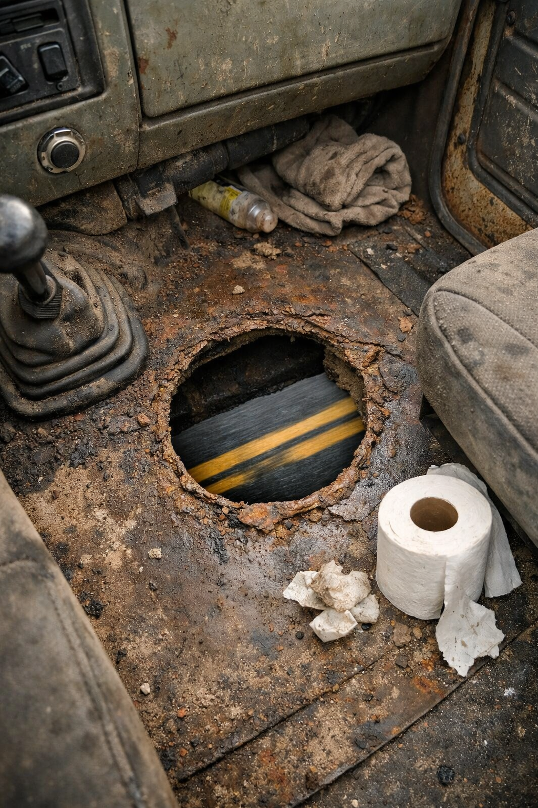

Introducing The Poop Hole™ — a single, perfectly circular aperture drilled directly through the floor of your cabin, engineered so that you, the modern long-haul professional, may relieve yourself at cruising speed, without losing a single mile of progress.
Pee. Poop. Both simultaneously. The road takes it all. You stay seated. You stay on schedule. You stay, in a very real sense, free.
Book Your Drilling →
The average trucker loses 47 minutes a day to bathroom breaks. Over a career, that's more than a month. We give it back.
Your kidneys will thank you. Your prostate will write you letters of appreciation. Your bladder will weep tears of joy, through the hole.
Walk past the queue at the Love's. Nod knowingly. They will look at you. You will look at them. They will know. You will know they know.
Hole placed directly beneath or beside the driver's seat per your preference. Our master drillers have an eye for trajectory and an ear for splash.
At highway speeds, airflow through the hole creates a passive updraft that evacuates the cabin. *Updraft may also include gravel, bees, and road salt.
The Poop Hole™ user base is a fraternity. You'll recognize each other at weigh stations by a look. You'll know. They'll know. You'll both pretend not to.
I was eighteen hours into a haul and hadn't stopped once. I looked down. I looked up. I looked down again. And I wept. Not from the hole. From the freedom. My dispatcher called and I could not speak.— Harjit S., Owner-Operator · 31 Years Behind The Wheel · Hole #00842
Saved 90 minutes on my last run. Used the time to listen to a full podcast about the 1970s. My wife said I smell different now. She did not elaborate.Darryl K. — Peterbilt 389, 22 Years
They said I couldn't do both at once. Denny drilled two holes. One for each purpose. He called it "The Diptych." I call it home.Anonymous — Reefer, Midwest Circuit
The first time was scary. The second time was transcendent. By the fifth time I was doing it over a state line, which I believe makes it federal.Wanda G. — Flatbed, Occasional Folk Singer
My co-driver uses it too. We have a schedule. We have a system. We have, above all, each other. And the hole."Big" Steve & Marv — Team Drivers, 2019–Present
You tell us your inseam, your cruising speed, and the approximate geometry of your seated posture. We take notes. We lose the notes. It does not matter.
A man named Denny pulls up in a 1997 Econoline. He brings one drill, one tarp, and what he calls "the trajectory calculator" (it is a protractor).
Drilling takes 4 to 11 minutes depending on floor material, rust coverage, and Denny's blood sugar. No install is complete without a warning about splash zones.
You return to the road a changed man. The truck stop recedes in your mirror. You will never see it again. You will never need to see it again.
Due to the nature of the device and the velocity of the vehicle, drivers in trailing lanes may experience what the industry refers to as "the ricochet." This can, on rare occasions, result in a modest uptick in windshield washer fluid consumption. We want to be transparent: this is not our fault.
We recommend those behind Poop Hole™ users maintain a two-truck-length following distance, keep their wipers serviced, and carry extra fluid in the cooler months. If anything, you should be thanking the Poop Hole™ driver, who is not stopping and is therefore not clogging your truck stop. We are a community.
You can have a shit hole in your truck. You and the five other guys in your cab can use it. The shit will hit the pavement. The pavement will kick it up. It may, statistically, land on the windshield of the Nissan behind you.
That is not your problem.
You know what else isn't your problem? Merging without a blinker. Taking up both lanes at a rest stop. Jake-braking through a residential zone at 4 AM. Leaving your trailer at a truck stop for nine days. None of this. Is your. Problem.
The Nissan should have left more following distance. The Nissan should have respected the rig. The Nissan has windshield washer fluid for a reason and that reason, today, is you.
Just go ahead and merge. Just go ahead and shit in the shit hole.
A fine question and the one most asked. Our Full Service tier accommodates this with a rear-biased hole geometry and our patented* windbreak deflector, which creates a modest low-pressure zone beneath the seat. *Patent is a drawing Denny did on a napkin.
That is a wonderful question. We are not lawyers. We are hole enthusiasts. Consult your jurisdiction, your mechanic, your dispatcher, and your conscience — in that order — before proceeding.
Winter use is not recommended in states where the temperature drops below -10°F, as the stream may, in extreme cases, return. We call this "The Upward Journey." We do not sell insurance against it.
The Department of Transportation has issued no formal statement on the Poop Hole™ because we have not asked them and we would encourage you to extend them the same courtesy. Decline to discuss the hole at inspection.
Marginally. The hole creates a small amount of drag. However, by never stopping, you save significantly more fuel than you lose. This is simple math and we resent being asked.
Missing is statistically inevitable. We include a complimentary roll of industrial paper towels with every install. Your cabin is already a sacred space; it is now also an honest one.
The hole is real. The truck is real. The relief is real. Everything else is negotiable.
Denny is currently somewhere between Sudbury and Laredo. Leave your cab's approximate location, your route, and your urgency level (1–10), and he'll intercept you at the next weigh station, truck stop, or active interstate.
Initiate Drilling →⚠︎ LEGAL NOTICE ⚠︎
The Poop Hole™ is a work of satire. Do not drill holes in your truck, anyone else's truck, or any vehicle. Doing so is illegal littering in most jurisdictions, a biohazard everywhere, compromises vehicle safety and emissions systems, voids your warranty and insurance, and is extremely gross. There is no Denny. There is no Econoline. There is only this very elaborate joke. Please use rest areas. They exist for a reason.